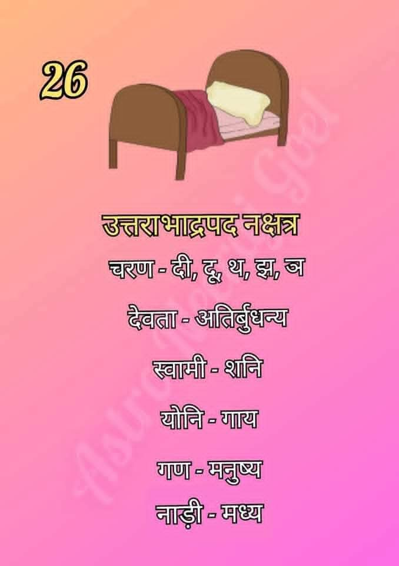

उत्तरा भाद्रपद नक्षत्र (Uttara Bhadrapada Nakshatra)
उत्तरा भाद्रपद नक्षत्र आकाश मंडल का छब्बीसवां नक्षत्र है। इसे 'अहिर्बुध्न्य' का नक्षत्र माना जाता है। यह स्थिरता, शांति, ज्ञान और आध्यात्मिक अंतर्दृष्टि का प्रतीक है।

सामान्य स्वभाव:
उत्तरा भाद्रपद नक्षत्र में जन्मे जातक अत्यंत शांत, बुद्धिमान और परोपकारी होते हैं। इनमें एकांत और चिंतन के प्रति गहरा झुकाव होता है। ये लोग दूसरों की मदद करने में विश्वास रखते हैं और इनका स्वभाव बहुत ही संयमित होता है।
उत्तरा भाद्रपद नक्षत्र की मुख्य विशेषताएँ
- शांतिप्रिय स्वभाव: ये टकराव से दूर रहते हैं और अपने जीवन में सौम्यता बनाए रखना पसंद करते हैं।
- आध्यात्मिक ज्ञान: इनमें ईश्वरीय और दार्शनिक विषयों को समझने की सहज क्षमता होती है।
- सहानुभूति: ये दूसरों के दुख को समझने वाले और भावुक हृदय के व्यक्ति होते हैं।
- दूरदर्शी: इनमें किसी भी स्थिति के परिणामों को पहले से भांपने की अद्भुत समझ होती है।
- आत्म-नियंत्रण: ये अपने क्रोध और भावनाओं पर बहुत अच्छा नियंत्रण रखते हैं।
शिक्षा एवं करियर
उत्तरा भाद्रपद नक्षत्र के जातक अपने धैर्य और ज्ञान के कारण निम्नलिखित क्षेत्रों में बहुत सफल होते हैं:
- आध्यात्मिक शिक्षण और मार्गदर्शन (Spiritual Teaching)
- परामर्श और मनोविज्ञान (Counseling & Psychology)
- समाज सेवा और दान (Social Work & Charity)
- लेखन और अनुसंधान (Writing & Research)
- ज्योतिष और गूढ़ विद्याएँ (Astrology & Occult)